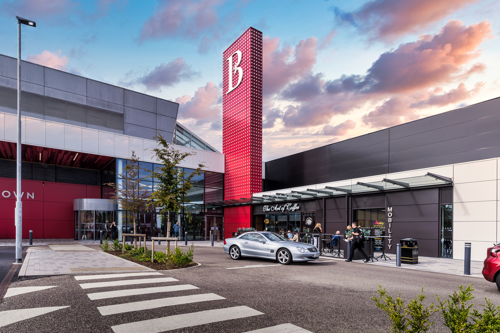
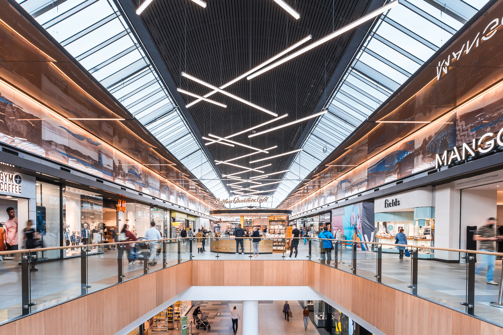
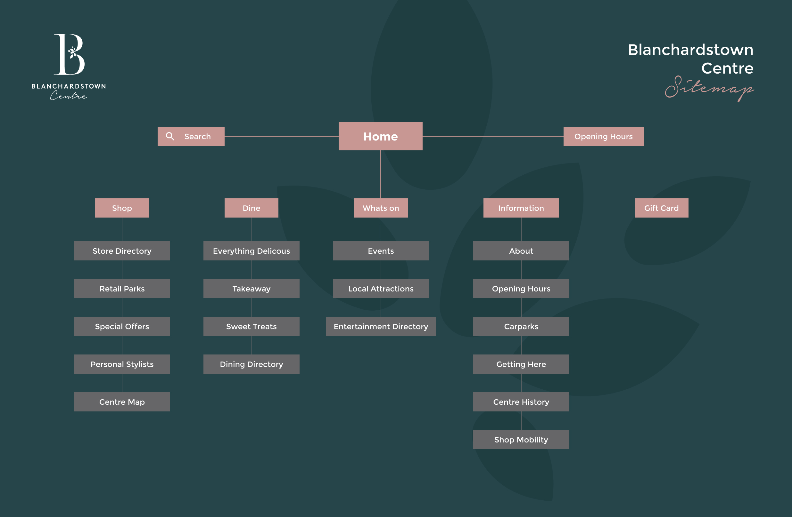
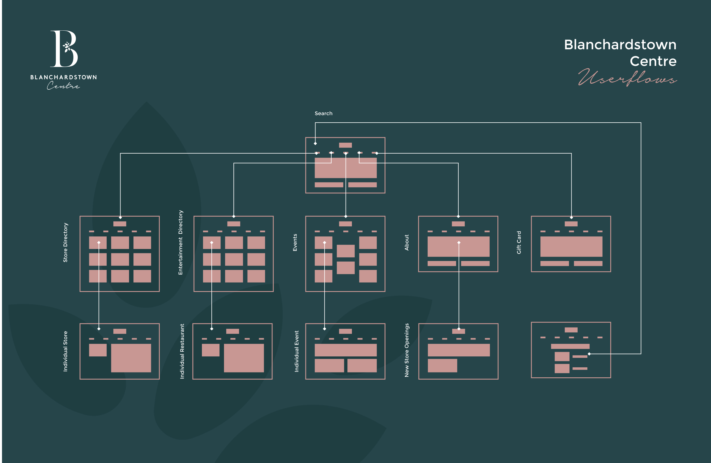
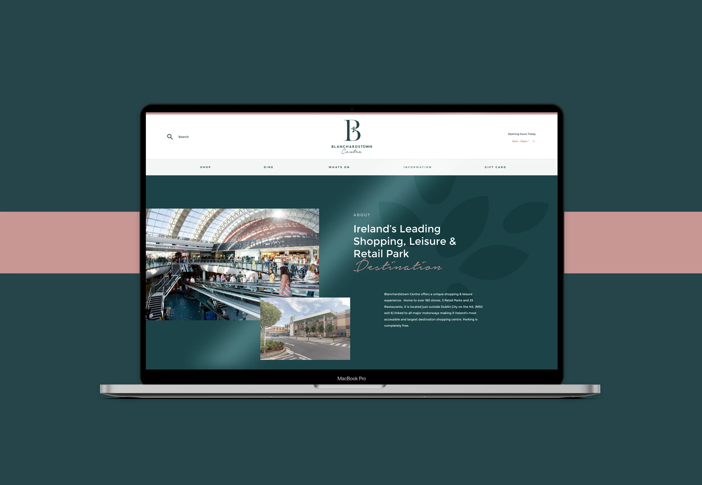
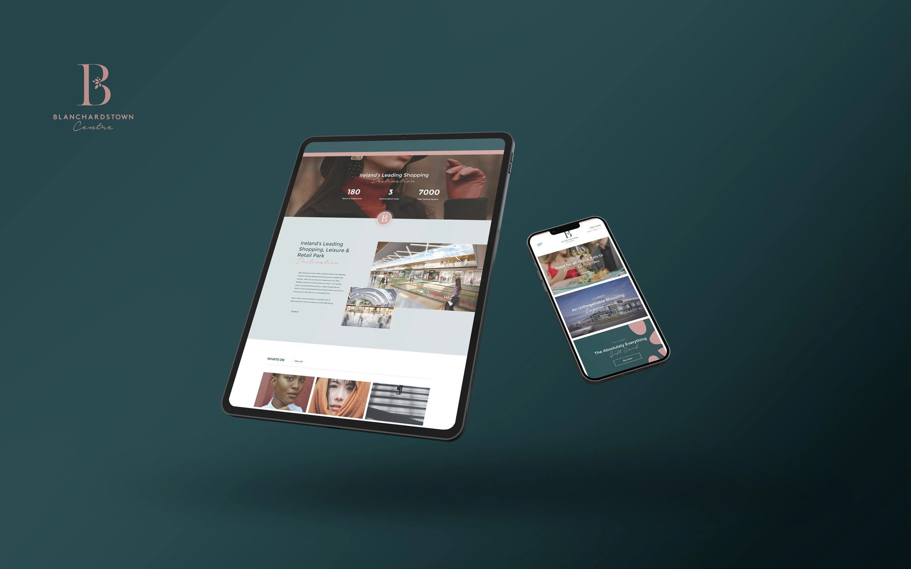

Blanchardstown Centre
New Look for an Old Favourite
Blanchardstown Centre is Ireland's largest shopping, leisure and retail-park destination, over 180 retailers, restaurants, a nine-screen cinema, library and theatre. During a major redevelopment, I was brought in to translate the new brand identity into a customer-centric digital platform.
Blanchardstown Centre is Ireland's largest shopping, leisure and retail-park destination, over 180 retailers, restaurants, a nine-screen cinema, library and theatre. During a major redevelopment, I was brought in to translate the new brand identity into a customer-centric digital platform.
Understanding the visitor
I studied browser personas and the brand architecture, ran UI/UX studies on the proposed designs, and analysed the previous website alongside competitor destinations. The goal: a distinctive, interactive platform that genuinely empathises with the centre's very broad audience.


Bringing the brand to life digitally
I developed wireframes and prototypes, generated bespoke imagery, and directed original photography and video for the site. Every section is clearly defined and the user journey was mapped and refined extensively, a modern, elegant interface built on real user research.



Results
Traffic rose 200% within days of launch, bounce rate dropped by half, and social interaction increased 160%, a strong digital birthday present for the centre's 25th year.
